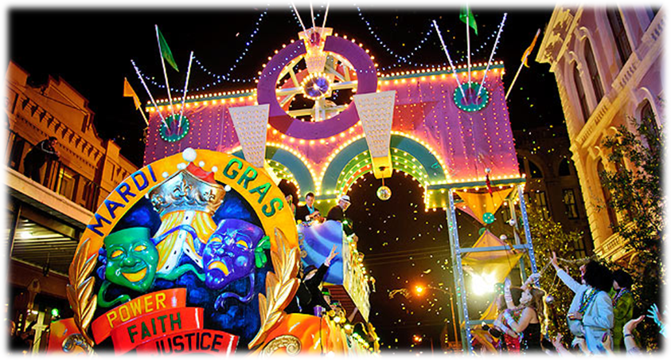

Attractions
The actual presentation of our midway is a vital component of our success. We pay strict attention to every detail in an effort to assure our event willl provide the public with maximum entertainment.
The Texas Mardi Gras midway includes a variety of the most popular carnival foods, tastefully presented to please every palate. We also feature games of skill and chance designed to suit players of all ages and interests. There are even special gamges for childrent hat guarantee a prize with every play ensuring that everyone goes home with a smile on their face!
Our family friendly features clean, well maintained state-of-the-art ride equiptment, operated by trained and component perswonnel. Our fabulous flashing light and color displays and exciting music all combine to furnish the ultimate in thrilling carnival experience. Our wide selection of amusement rides feature rides for patrons of all ages. From thrill seekers to junior riders, we have you covered.
Aside from rides,games,and food, Amusements of America fills the grounds with cusotmer amenities including shaded rest areas with benches and picnic tables, misting fans for hot summer days, and photo opportunity areas with character cut-outs.
